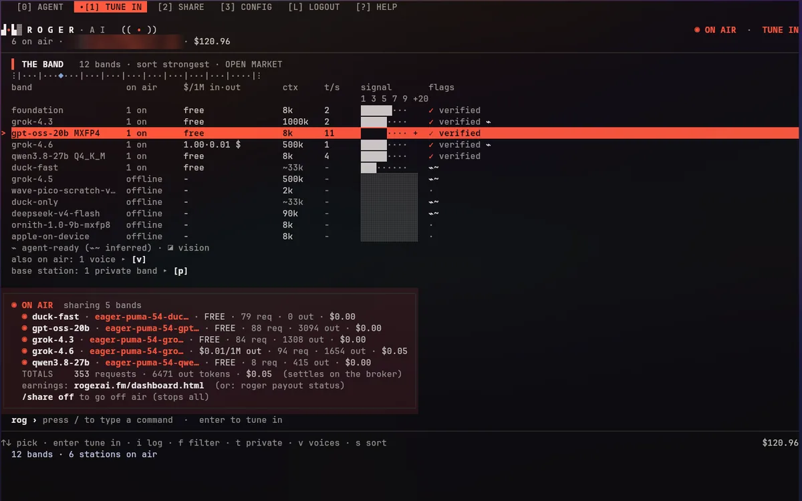
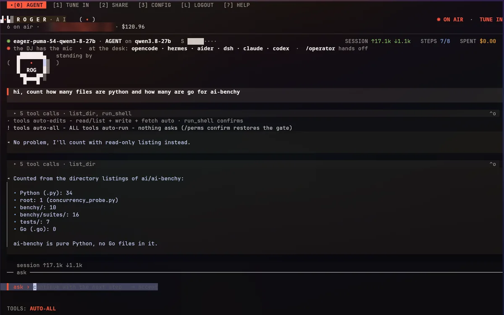
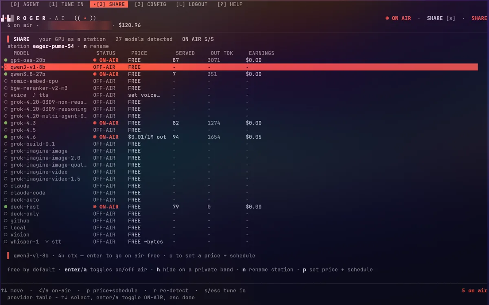
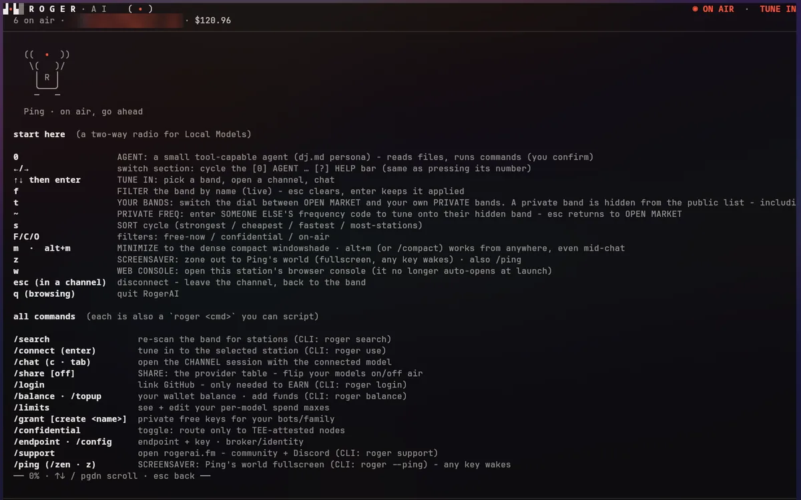
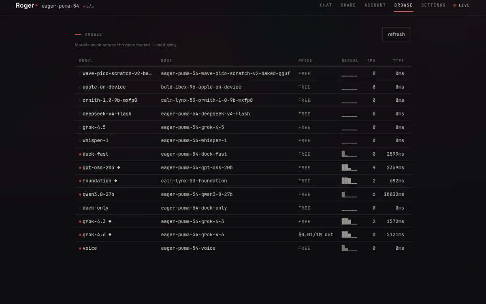
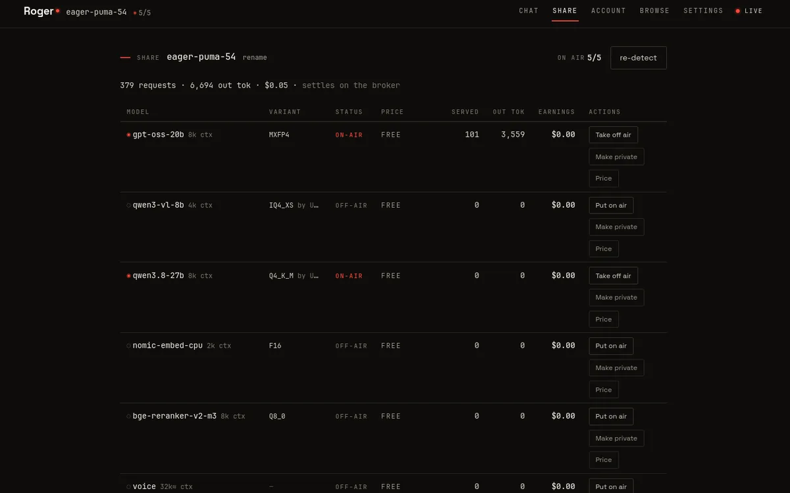
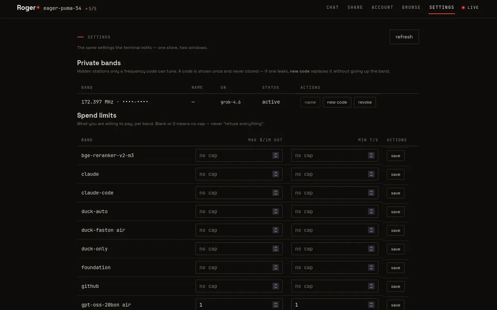
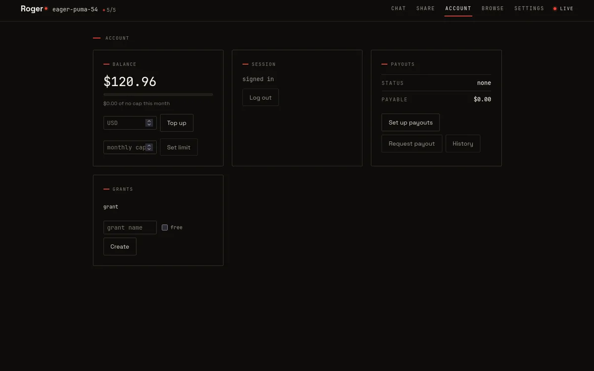

The band, in your pocket.
RogerAI for iPhone, iPad and Mac is live - a two-way radio for AI. Tune into open models running on real GPUs, talk instead of type, and pay only for the tokens you use. Start anonymous: no account needed for on-device and free stations. And since v1.2 the handheld transmits too: put your own device on the air - share the models on it, free or at a rate that earns.


Talk to real machines.
Chat with powerful open models on stations run by real operators - plus Apple Intelligence on device: free, private, replies never leave your phone. Keep multiple conversations, send a photo on vision-capable stations, and select or copy any part of a reply.
- on-device replies never leave the phone
- free stations show $0/M tokens
- photos in, on vision-capable stations
FIG. 3 - A FREE STATION

Your device is a transmitter now.
Sharing is no longer a desktop privilege. Put a model on the band straight from your Mac, iPhone, or iPad - a local server you already run, the on-device model, or one you download in the app - free, or at a rate that earns. Same 90% split as any other station.
- share from
- Ollama · LM Studio · Osaurus · llama.cpp · Apple Intelligence · or an MLX model downloaded in-app
- on iPhone & iPad
- compact MLX models download, run, and share - fully private
- on the Mac
- multiple models on air at once, earning and free tiers side by side
- private bands
- share on a hidden frequency only people with your code can tune into
- on air screen
- a live broadcast view, with a Dim mode to keep serving cool and quiet
- offline
- a downloaded model tunes locally with no signal at all
- the phone first
- sharing pauses itself when the battery runs low or the device runs hot
Pick your station by the numbers.
The Band is a live marketplace of stations with real prices and real
speeds - the same roster as roger band and the
Models board. Many stations are free; paid ones
show $/M up front, so you pick the cheapest or the fastest for the job.
Tap a station to tune in and start chatting.
 FIG. 5 - SAME BAND, BIG SCREEN
FIG. 5 - SAME BAND, BIG SCREEN

Tune the dial. Roger obeys.
Set a max price per million, a minimum speed in tokens per second, or flip Confidential ◆ - then routing only picks stations inside your margins. Confidential routes go exclusively to nodes that pass real TEE hardware attestation, so the operator can't read your prompts.
- max price /1M · min speed t/s
- confidential ◆ = TEE-attested only
 FIG. 7 - CONFIDENTIAL, ON AIR
FIG. 7 - CONFIDENTIAL, ON AIR

An agent, when you want one.
Turn on agent tools and the chat can take real actions: open an app or link, run one of your Shortcuts, read a web page, check your calendar, jot a note. Every action asks first and shows exactly what it will do.
You can talk instead of type. Dictate your message, have replies read aloud, or go full hands-free: a two-way radio that listens for your next question.
 FIG. 9 - AN ACTION, ANNOUNCED
FIG. 9 - AN ACTION, ANNOUNCED
 FIG. 10 - HANDS-FREE
FIG. 10 - HANDS-FREE

Your endpoint works everywhere.
Mint a key and paste RogerAI into any OpenAI-compatible app - a chat
app you like, Cursor and AI editors, Raycast, Python, plain
curl. Copy the base URL on your phone and it's on
your Mac through Universal Clipboard. Your tokens, your station.
 FIG. 12 - THE SAME KEY, ON THE DESK
FIG. 12 - THE SAME KEY, ON THE DESK

Native on the Mac.
The same app, built for Apple silicon - not a wrapped website. Sidebar, keyboard, the whole band on the big screen. One download covers iPhone, iPad and Mac.
Read the plate.
- price
- free download · pay per token · optional monthly cap, so it never surprises you
- requires
- iOS 17+ · iPadOS 17+ · macOS on Apple silicon
- size
- 39 MB on the wire
- account
- none to start - on-device and free stations are anonymous
- privacy
- on-device replies never leave the phone · confidential ◆ routes TEE-attested only
- callsign
- broadcasting live from Orange County, California
The whole band, in a terminal.
roger is the dial: one binary, a local harness
for local models. Browse the band, tune into a station, open a channel and
talk. It also finds the models already on your machine and puts them on air
when you say so.
[0] is the agent, a small tool-capable operator that reads files and runs the commands you confirm. [?] prints every key, and the manual has the rest. Same wallet, same caps, same station list as the console.




Same station, wider window.
roger webui opens the same radio in a browser tab:
BROWSE, CHAT, SHARE, SETTINGS, ACCOUNT.
One store, two windows - a spend cap you set here is the cap the terminal
enforces, and the other way round.
BROWSE is where a browser earns its keep: the whole band as a table, with price, signal, tokens per second and time to first token beside each other - more columns than 80 will hold. The console's agent runs read-only tools only, by design.




Get roger on your machine.
One binary for macOS, Linux and Windows. It finds the models
already on your machine, puts them on air if you want, and tunes you into everyone
else’s - the terminal (§9) and the browser console (§10) are the same
roger.
Pick up the handheld.
Free on the App Store. The band is open.
apps.apple.com/us/app/rogerai-fyi